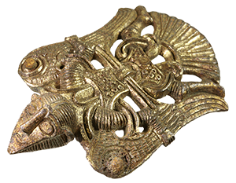

Nyckeln till Uppåkra
Med Nyckeln till Uppåkra öppnas stora möjligheter till nationella och internationella studier av järnålderns och medeltidens samhällsbygge utifrån en plats med extrem bebyggelsekontinuitet. I arkivet synkroniseras flera års arkeologiska undersökningar till ett sammanhängande digitalt system i Intrasis och GIS, vilket förbättrar möjligheterna till kronologiska och rumsliga studier.
Projektet har möjliggjorts genom forskningsbidrag från Riksbankens Jubileumsfond. Arkiven är under uppbyggnad och utökas med fler funktioner och objekt.
|